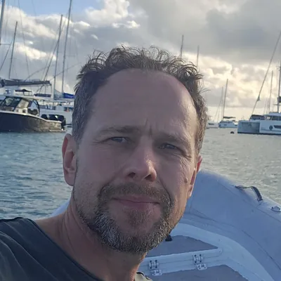

Featured Guide
5 min read
Route Guide • Ibiza 2026
•
September 2026
Sailing Ibiza and Formentera in October: what the week actually looks like
Most people picture Ibiza in August: full marinas, €18 cocktails, boats rafted three deep in every bay. October is a different island. The charter fleet has thinned out, the anchorages are half empty, and you can still swim without thinking twice about it.

Robertas Vaitiekūnas
Skipper • Vela Vida